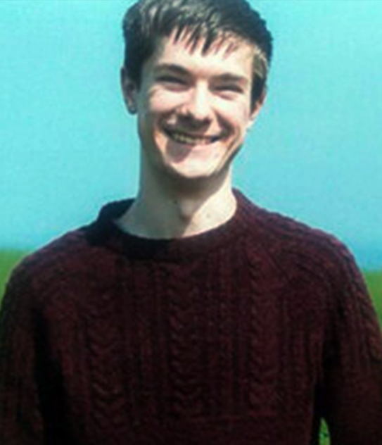
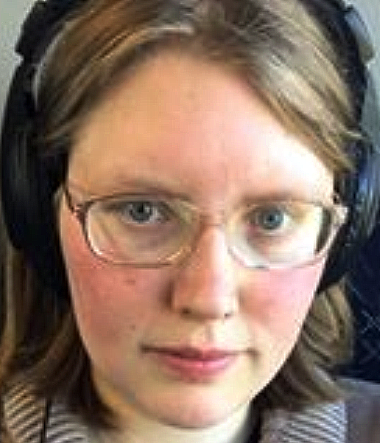

Meet the Team

Leon Irving
Team Roles - Documentation, Level Design, Enemy Character Design, Enemy Character Implementation, Environment Art
Kenneth Yorke
Team Roles - Documentation, Player Character Implementation, Player Character Design, Concept Art Development, Audio Development, Story Design, Character Voices, Game Programming, User Interface Design, Logo Design

Kirstin Jackson
Team Roles - Documentation, Character Voices